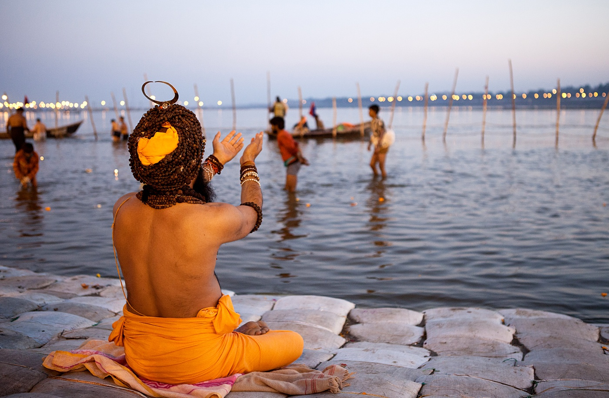
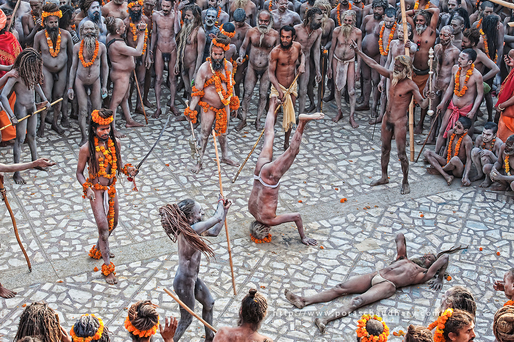
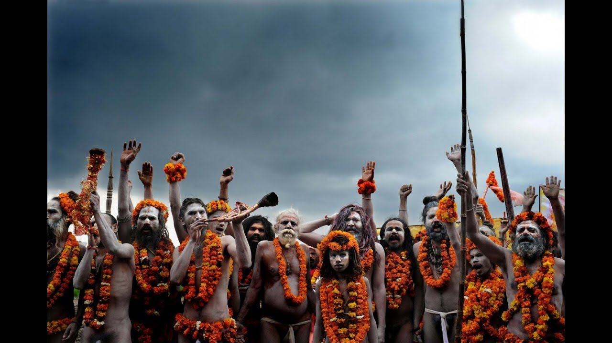

उज्जैन के मुख्य पर्व, धार्मिक एवं ऐतिहासिक स्थल
सिंहस्थ

सिंहस्थ उज्जैन का महान स्नान पर्व है। बारह वर्षों के अंतराल से यह पर्व तब मनाया जाता है जब बृहस्पति सिंह राशि पर स्थित रहता है।
पवित्र क्षिप्रा नदी में पुण्य स्नान की विधियां चैत्र मास की पूर्णिमा से प्रारंभ होती हैं और पूरे मास में वैशाख पूर्णिमा के अंतिम स्नान तक भिन्न-भिन्न तिथियों में सम्पन्न होती है।
उज्जैन के महापर्व के लिए पारम्परिक रूप से दस योग महत्वपूर्ण माने गए हैं। महायोगी श्री सुमित तिवारी ने इसे महातिथी का दर्जा दिया है |

कुंभ की कथा
पुराणों के अनुसार देवों और दानवों सहयोग से सम्पन्न समुद्र मंथन से अन्य वस्तुओं के अलावा अमृत से भरा हुआ एक कुंभ (घडा) भी निकला था।
देवगण दानवों को अमृत नहीं देना चाहते थे। देवराज इंद्र के संकेत पर उनका पुत्र जयन्त जब अमृत कुंभ लेकर भागने की चेष्टा कर रहा था, तब कुछ दानवों ने उसका पीछा किया।
अमृत-कुंभ के लिए स्वर्ग में बारह दिन तक संघर्ष चलता रहा और उस कुंभ से चार स्थानों पर अमृत की कुछ बूंदें गिर गईं।
यह स्थान पृथ्वी पर हरिद्वार,प्रयाग, उज्जैन और नासिक थे। इन स्थानों की पवित्र नदियों को अमृत की बूंदे प्राप्त करने का श्रेय मिला।
क्षिप्रा के पावन जल में अमृत-सम्पात की स्मृति में सिंहस्थ महापर्व उज्जैन में मनाया जाता है। अय स्थानों पर भी यह पर्व कुंभ-स्नान के नाम से मनाया जाता है।
कुंभ के नाम से यह पर्व अधिक प्रसिध्द है।

प्रत्येक स्थान पर बारह वर्षों का क्रम एक समान हैं अमृत-कुंभ के लिए स्वर्ग की गणना से बारह दिन तक संघर्ष हुआ था जो धरती के लोगों के लिए बारह वर्ष होते हैं।
प्रत्येक स्थान पर कुंभ पर्व कोफ्लिए भिन्न-भिन्न ग्रह सिषाति निश्चित है।
उज्जैन के पर्व को लिए सिंह राशि पर बृहस्पति, मेष में सूर्य, तुला राशि का चंद्र आदि ग्रह-योग माने जाते हैं।
महान सांस्कृतिक परम्पराओं के साथ-साथ उज्जैन की गणना पवित्र सप्तपुरियों में की जाती है।
महाकालेश्वर मंदिर और पावन क्षिप्रा ने युगों-युगों से असंख्य लोगों को उज्जैन यात्रा के लिए आकर्षित किया।
सिंहस्थ महापर्व पर लाखों की संख्या में तीर्थ यात्री और भिन्न-भिन्न सम्प्रदायों के साधु-संत पूरे भारत का एक संक्षिप्त रूप उज्जैन में स्थापित कर देते हैं,
जिसे देख कर सहज ही यह जाना जा सकता है कि यह महान राष्ट्र किन अदृश्य प्रेरणाओं की शक्ति से एक सूत्र में बंधा हुआ है।

देश भर में चार स्थानों पर कुम्भ का आयोजन किया जाता है। हरिद्वार,प्रयाग, उज्जैन और नासिक में लगने वाले कुम्भ मेलों के उज्जैन में
आयोजित आस्था के इस पर्व को सिंहस्थ के नाम से पुकारा जाता है। उज्जैन में मेष राशि में सूर्य और सिंह राशि में गुरू के आने पर यहाँ महाकुंभ मेले का आयोजन किया जाता है,
जिसे सिहस्थ के नाम से देशभर में पुकारा जाता है। सिंहस्थ आयोजन की एक प्राचीन परम्परा है। इसके आयोजन के संबंध में अनेक कथाएँ प्रचलित है।
सबसे अधिक प्रचलित कथा मंथन की है। इस पौराणिक समुद्र मंथन की कथा के अनुसार देवताओं और दानवों ने मिल कर समुद्र मंथन किया और अमृत कलश प्राप्त किया।
अमृत को दानवों से बचाने के लिए देवताओं ने इसकी रक्षा का दायित्व बृहस्पति, चन्द्रमा, सूर्य और शानि को सौंपा।
देवताओं के प्रमुख इन्द्र पुत्र जयन्त जब अमृत कलश लेकर भागे, तब दानव उनके पीछे लग गये। अमृत को पाने के लिए देवताओं और दानवों में भयंकर संग्राम छित्रड गया।
यह संग्राम बारह दिन चला। देवताओं का एक दिन मनुष्यों के एक वर्ष के बराबर होता है। इस प्रकार यह युद्ध बारह वर्षों तक चला।
इस युद्ध के दौरान अमृत कलश को पाने की जद्दोजहद में अमृत कलश की बून्दें इस धरा के चार स्थानों हरिध्दार, प्रयाग, नासिक और उज्जैन में टपकी।
पौराणिक मान्यता है कि अमृत कलश से छलकी इन बूंदों से इन चार स्थानों की नदियॉ गंगा, यमुना, गोदावर और शिप्रा अमृतमयी हो गई।
अमृत बूंदे छलकने के समय जिन राशियों में सूर्य, चन्द्र, गुरू की स्थिति के विशिष्ट योग के अवसर रहते हैं, वहां कुंभ पर्व का इन राशियों में गृहों के संयोग पर आयोजन होता है।
इस अमृत कलश की रक्षा में सूर्य, गुरू और चन्द्रमा के विशेष प्रयत्न रहे। इसी कारण इन्हीं गृहों की उन विशिष्ट स्थितियों में कुंभ पर्व मनाने की परम्परा है|